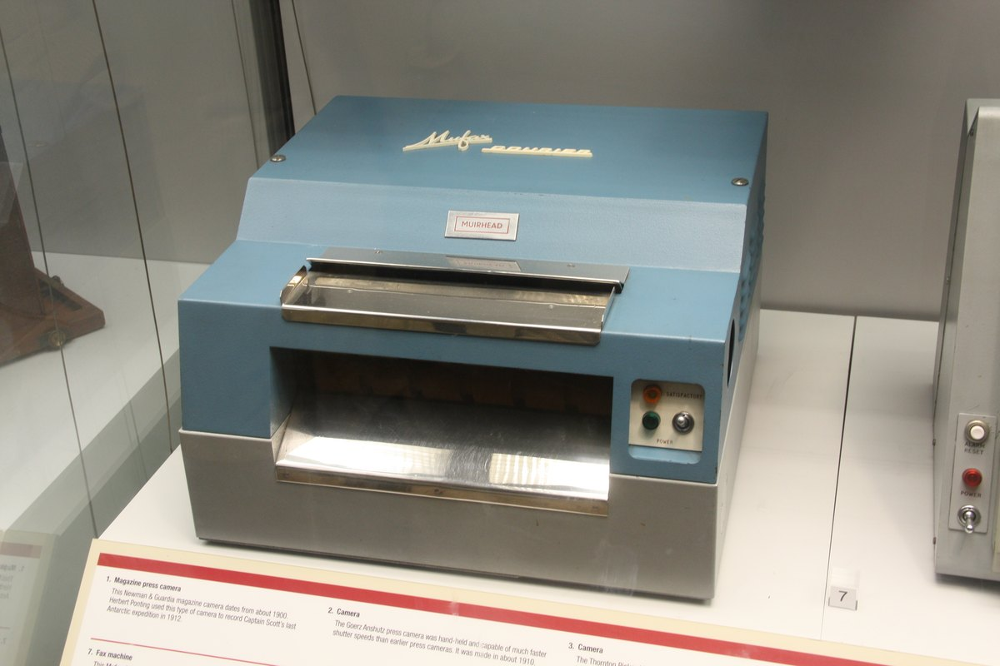
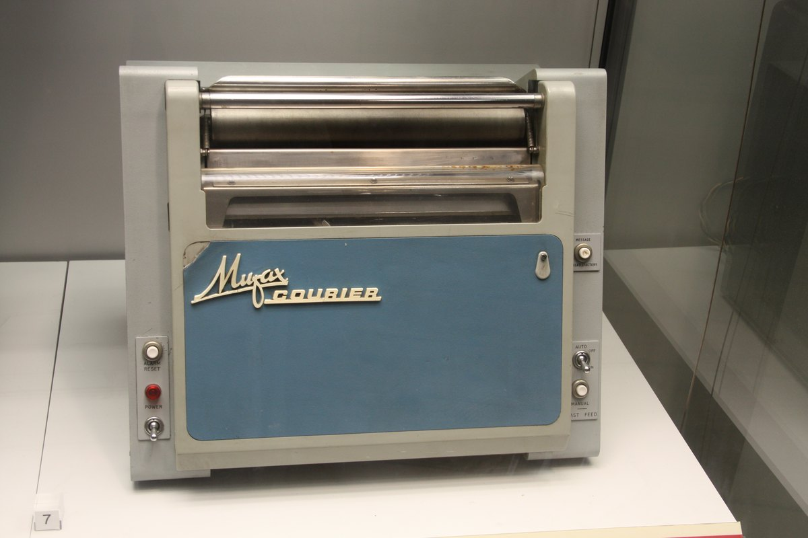
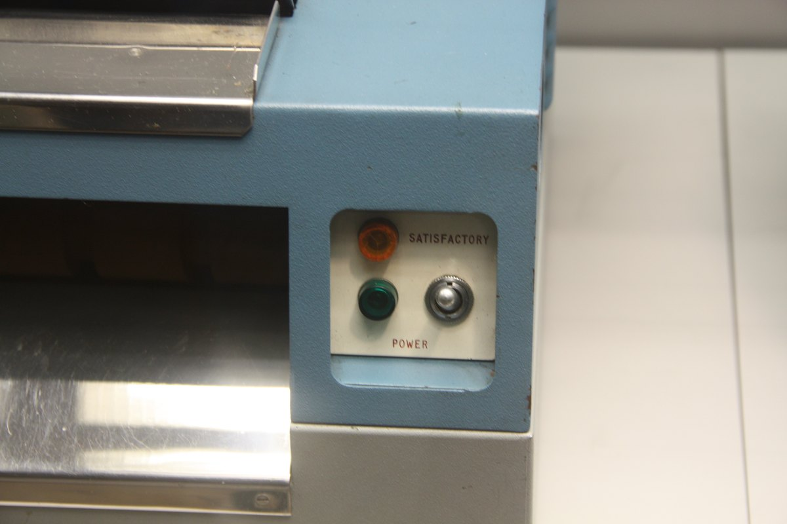

1975
Muirhead & Co. Ltd.
Mufax Courier (1975)
The portable drum fax whose sending half couples to a phone line — and whose '1-bit instant feedback' lamp tells you, mid-transmission, that the far end got a bad scan

Overview
Deep dive
Media

